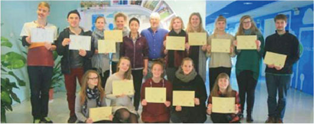

华夏未来公益国际力求为社会提供更多创新的文化公益服务
2016-04-20
华夏未来公益国际成立于2014年，聚拢了一批本土和在津工作的外籍文化公益人士，旨在开发服务于儿童文化类的项目、培养国际志愿团队、培育面向儿童服务的社区组织，作为公益国际的重要组成部分，华夏未来•天津儿童公益组织孵化服务园致力于天津儿童公益事业的发展，着力解决不同需求的青少年社会问题，促进儿童公益事业的发展，扩大儿童文化公益活动的受众群体，为初创期的民间文化公益组织提供关键性支持。
华夏未来公益国际力求为社会提供更多创新的文化公益服务
